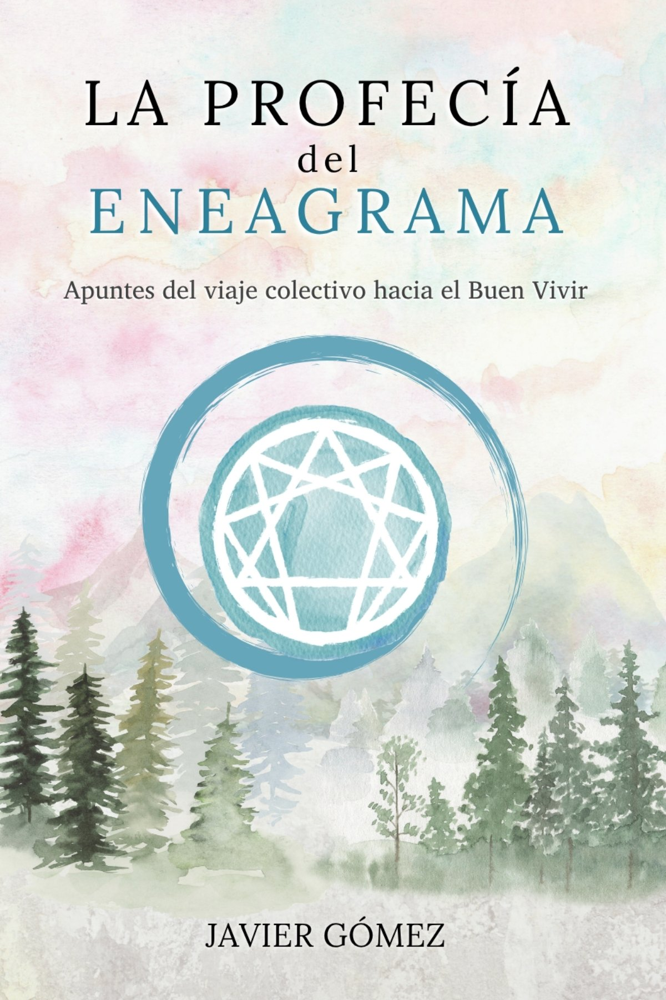
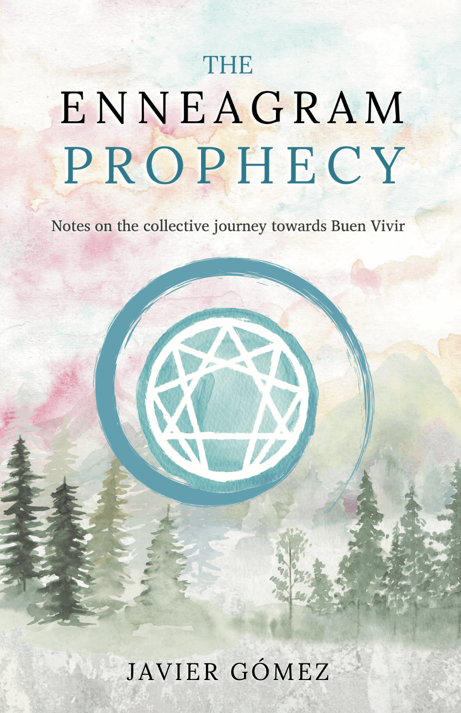

Select your preferred language to continue
Apuntes del viaje colectivo hacia el Buen Vivir

ESTO NO ES UN LIBRO MÁS SOBRE EL ENEAGRAMA
¿Y si el Eneagrama que conoces es solo la versión comercial de algo mucho más profundo?
Este libro no es otro manual de tipos de personalidad. Es un viaje iniciático hacia el Eneagrama como mapa sagrado de despertar espiritual —más allá del coaching, más allá del mercado, en su esencia original.
Este no es un libro para leer. Es un libro para experimentar.
A través de cuatro cuadernos de exploración espiritual, descubrirás:
Cada página actúa como un espejo de consciencia, invitándote a recordar lo esencial.
Advertencia:
Este libro no ofrece respuestas fáciles ni soluciones instantáneas.
Invita a contemplar en lugar de interpretar, a escuchar lo esencial bajo el ruido del mundo.
Si buscas comodidad, este no es tu libro.
Si buscas verdad, bienvenido.
Javier Gómez es psicólogo clínico y terapeuta transpersonal. Integra psicología profunda, estudio simbólico y práctica contemplativa, con más de 7 años de experiencia clínica.
Ha trabajado con comunidades indígenas en Abya Yala, facilitado procesos terapéuticos en contextos de trauma y dedicado años al estudio del Eneagrama desde su dimensión sagrada original.
Este es su primer libro publicado: un testimonio vivo de su propio camino de despertar.
Una invitación a recordar. Un llamado a volver a lo esencial.
"El despertar no es una posibilidad lejana,
se parece más bien al hecho de recordar,
de volver a habitar lo que ya somos"
Notes from the Collective Journey to Buen Vivir

THIS IS NOT JUST ANOTHER ENNEAGRAM BOOK
What if the Enneagram you know is just the commercial version of something much deeper?
This book is not another personality types manual. It is an initiatory journey toward the Enneagram as a sacred map of spiritual awakening—beyond coaching, beyond the market, in its original essence.
This is not a book to read. It is a book to experience.
Through four notebooks of spiritual exploration, you will discover:
Each page acts as a mirror of consciousness, inviting you to remember the essential.
Warning:
This book does not offer easy answers or instant solutions.
It invites you to contemplate rather than interpret, to listen to the essential beneath the noise of the world.
If you seek comfort, this is not your book.
If you seek truth, welcome.
Javier Gómez is a clinical psychologist and transpersonal therapist. He integrates deep psychology, symbolic study and contemplative practice, with more than 7 years of clinical experience.
He has worked with indigenous communities in Abya Yala, facilitated therapeutic processes in trauma contexts and dedicated years to studying the Enneagram from its original sacred dimension.
This is his first published book: a living testimony of his own awakening path.
An invitation to remember. A call to return to the essential.
"Awakening is not a distant possibility,
it is more like remembering,
returning to inhabit what we already are"